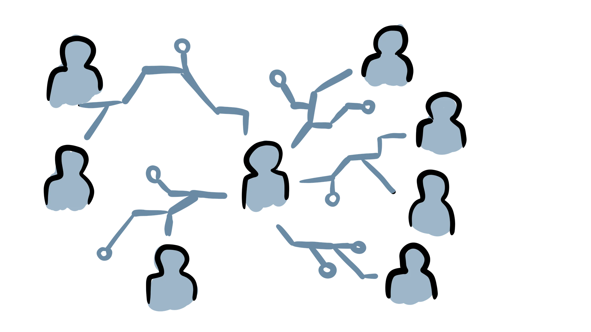

Assessorament & Consultoria
Oferim dos tipus de serveis personalitzats per a professionals de la indústria o de l’acadèmia: Consultoria i Assessorament. La Consultoria se centra a resoldre problemes específics en períodes relativament curts, mentre que l’Assessorament s’enfoca en la visió general abordant qüestions més àmplies i a llarg term. Tant la nostra Consultoria com l’Assessorament són enfoques personalitzats i individuals adaptats a les necessitats específiques de cadascun dels nostres clients.
Les tarifes comencen des de 100 EUR/hora; Sol·licita un pressupost per a informació detallada de preus i descomptes.

Les principals àrees en què oferim la nostra experiència són les següents:
Quina és la vostra Estratègia de Dades? Planegeu utilitzar Intel·ligència Artificial, Ciència de Dades, Aprenentatge Estadístic, Aprenentatge Automàtic, Deep Learning o Big Data per assolir els objectius de la vostra entitat?
Si la terminologia us resulta confusa, no sou els únics i esteu al lloc correcte per aclarir-ho; si ja enteneu els termes, també sabreu que aquesta és una àrea d’investigació, aplicació i innovació activa i en constant creixement, amb poques organitzacions que puguin gestionar-ho tot per si soles.
Podem ajudar-vos a trobar respostes a preguntes com:
- De què va tot aquest soroll i realment ho necessito?
- Quines són les característiques de les dades que serien útils per a mi?
- Quines preguntes puc respondre amb les dades disponibles?
- Quin tipus de models estadístics aconseguiran els meus objectius?
- Necessito algoritmes complexos d’Aprenentatge Automàtic o Deep Learning, o no són necessaris?
Independentment del vostre àmbit i mida de la vostra empresa, departament o grup d’investigació, podem ajudar-vos a avaluar les necessitats de dades i a escollir les eines necessàries per aprofitar aquestes tecnologies.

No importa quines dades tingueu, provenen d’algun sistema i es generen d’alguna manera; però no totes les dades són iguals. El disseny experimental és la ciència darrere de la ciència; com indica el nom, permet als investigadors controlar com es veuen els seus conjunts de dades.
Per als investigadors no experimentals, també és essencial controlar diversos aspectes de com es generen, recopilen, organitzen i categoritzen les dades: els metadades són la meitat de les dades i la gestió de dades no és opcional.
Si ja disposeu d’un flux de dades a la vostra institució, també podem optimitzar i millorar la seva generació, preprocessament i wrangling en general per al seu ús futur amb models estadístics, d’aprenentatge automàtic o d’intel·ligència artificial, així com guiar-vos en la formalització d’un Pla de Gestió de Dades que s’adapti a les vostres necessitats.
Si ja esteu immersos en mètodes quantitatius, probablement us heu enfrontat a eleccions de proves estadístiques per a una anàlisi, mètodes d’aprenentatge automàtic per a una aplicació o, en general, diferents alternatives sobre com implementar un model estadístic.
El camp de l’estadística ja és ampli i ha crescut exponencialment amb l’ús de l’aprenentatge automàtic i la subseqüent explosió de la IA; la bona notícia és que no necessiteu un doctorat en estadística o ciències de la computació per beneficiar-vos d’això, per això som aquí.
Tant si sou un científic que requereix una entrada experta general en tècniques quantitatives, com si sou un professional que necessita assistència amb una implementació específica, podem donar-vos suport en l’elecció, implementació i justificació de l’ús dels vostres mètodes estadístics.
Per a algunes institucions, una implementació bàsica (però robusta) serà la manera més eficient d’assolir els seus objectius; per a altres, pot ser que es requereixin eines d’alt rendiment. La prova, validació, benchmarking i optimització poden aparèixer al final del procés d’implementació d’un algorisme; no obstant això, aquestes decisions no haurien d’arribar després – programar de manera reproduïble és costós, consumeix temps i és procliu a errors si no es fa bé. És important planificar amb antelació, pensar en aquestes decisions i prendre-les de manera oportuna per al projecte en el seu conjunt. Les opcions abondan:
- Quin llenguatge de programació és òptim per a les meves necessitats?
- Necessito una aplicació d’alt rendiment, o una eina bàsica em serà suficient?
- Puc utilitzar eines i paquets preexistents, o he d’implementar anàlisis des de zero?
- Quins frameworks de treball preexistents estan disponibles; quins són els pros i contres de cada opció?
- Com puc millorar el meu framework? (GPU, paralel·lització, computació al núvol, optimització de codi)